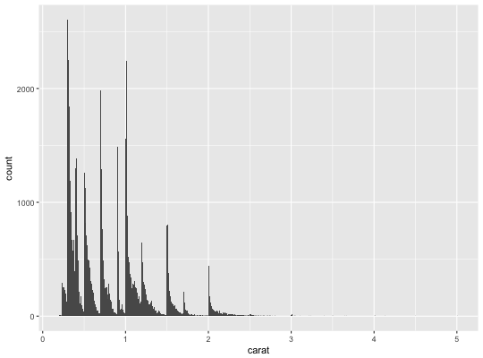
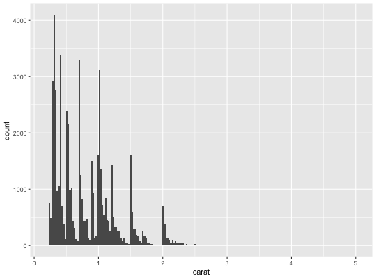
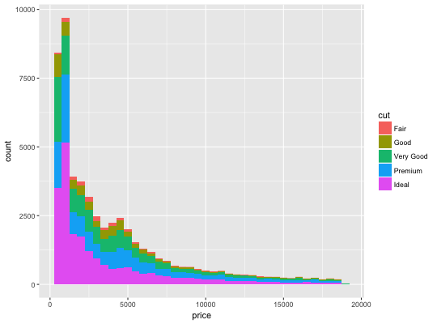
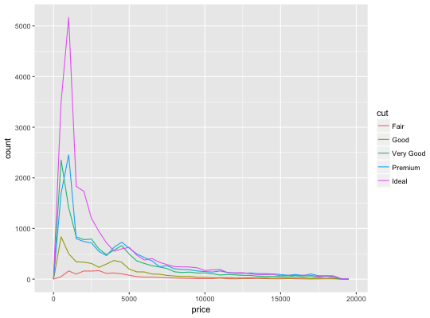
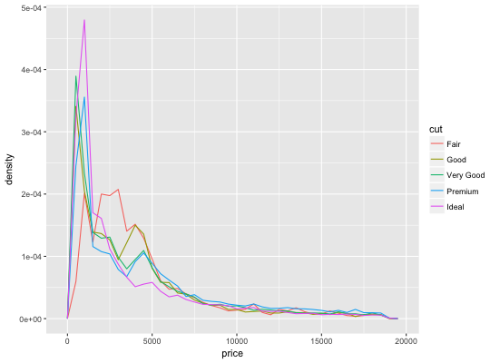
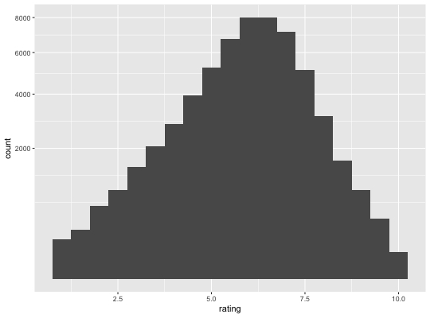

Histograms and frequency polygons
Visualise the distribution of a single continuous variable by dividing
the x axis into bins and counting the number of observations in each bin.
Histograms (geom_histogram) display the count with bars; frequency
polygons (geom_freqpoly), display the counts with lines. Frequency
polygons are more suitable when you want to compare the distribution
across a the levels of a categorical variable.
stat_bin is suitable only for continuous x data. If your x data is
discrete, you probably want to use stat_count.
geom_freqpoly(mapping = NULL, data = NULL, stat = "bin", position = "identity", ..., na.rm = FALSE, show.legend = NA, inherit.aes = TRUE) geom_histogram(mapping = NULL, data = NULL, stat = "bin", position = "stack", ..., binwidth = NULL, bins = NULL, na.rm = FALSE, show.legend = NA, inherit.aes = TRUE) stat_bin(mapping = NULL, data = NULL, geom = "bar", position = "stack", ..., binwidth = NULL, bins = NULL, center = NULL, boundary = NULL, breaks = NULL, closed = c("right", "left"), pad = FALSE, na.rm = FALSE, show.legend = NA, inherit.aes = TRUE)
Arguments
- mapping
- Set of aesthetic mappings created by
aesoraes_. If specified andinherit.aes = TRUE(the default), it is combined with the default mapping at the top level of the plot. You must supplymappingif there is no plot mapping. - data
- The data to be displayed in this layer. There are three
options:
If
NULL, the default, the data is inherited from the plot data as specified in the call toggplot. Adata.frame, or other object, will override the plot data. All objects will be fortified to produce a data frame. Seefortifyfor which variables will be created. Afunctionwill be called with a single argument, the plot data. The return value must be adata.frame., and will be used as the layer data. - position
- Position adjustment, either as a string, or the result of a call to a position adjustment function.
- ...
- other arguments passed on to
layer. These are often aesthetics, used to set an aesthetic to a fixed value, likecolor = "red"orsize = 3. They may also be parameters to the paired geom/stat. - na.rm
- If
FALSE, the default, missing values are removed with a warning. IfTRUE, missing values are silently removed. - show.legend
- logical. Should this layer be included in the legends?
NA, the default, includes if any aesthetics are mapped.FALSEnever includes, andTRUEalways includes. - inherit.aes
- If
FALSE, overrides the default aesthetics, rather than combining with them. This is most useful for helper functions that define both data and aesthetics and shouldn't inherit behaviour from the default plot specification, e.g.borders. - binwidth
- The width of the bins. The default is to use
binsbins that cover the range of the data. You should always override this value, exploring multiple widths to find the best to illustrate the stories in your data. The bin width of a date variable is the number of days in each time; the bin width of a time variable is the number of seconds. - bins
- Number of bins. Overridden by
binwidth. Defaults to 30 - geom, stat
- Use to override the default connection between
geom_histogram/geom_freqpolyandstat_bin. - center
- The center of one of the bins. Note that if center is above or
below the range of the data, things will be shifted by an appropriate
number of
widths. To center on integers, for example, usewidth=1andcenter=0, even if0is outside the range of the data. At most one ofcenterandboundarymay be specified. - boundary
- A boundary between two bins. As with
center, things are shifted whenboundaryis outside the range of the data. For example, to center on integers, usewidth = 1andboundary = 0.5, even if1is outside the range of the data. At most one ofcenterandboundarymay be specified. - breaks
- Alternatively, you can supply a numeric vector giving
the bin boundaries. Overrides
binwidth,bins,center, andboundary. - closed
- One of
"right"or"left"indicating whether right or left edges of bins are included in the bin. - pad
- If
TRUE, adds empty bins at either end of x. This ensures frequency polygons touch 0. Defaults toFALSE.
Details
By default, the underlying computation (stat_bin) uses 30 bins -
this is not a good default, but the idea is to get you experimenting with
different binwidths. You may need to look at a few to uncover the full
story behind your data.
Aesthetics
geom_histogram uses the same aesthetics as geom_bar;
geom_freqpoly uses the same aesthetics as geom_line.
Computed variables
- count
- number of points in bin
- density
- density of points in bin, scaled to integrate to 1
- ncount
- count, scaled to maximum of 1
- ndensity
- density, scaled to maximum of 1
See also
stat_count, which counts the number of cases at each x
posotion, without binning. It is suitable for both discrete and continuous
x data, whereas stat_bin is suitable only for continuous x data.
Examples
`stat_bin()` using `bins = 30`. Pick better value with `binwidth`.
# Rather than stacking histograms, it's easier to compare frequency # polygons ggplot(diamonds, aes(price, fill = cut)) + geom_histogram(binwidth = 500)# To make it easier to compare distributions with very different counts, # put density on the y axis instead of the default count ggplot(diamonds, aes(price, ..density.., colour = cut)) + geom_freqpoly(binwidth = 500)if (require("ggplot2movies")) { # Often we don't want the height of the bar to represent the # count of observations, but the sum of some other variable. # For example, the following plot shows the number of movies # in each rating. m <- ggplot(movies, aes(rating)) m + geom_histogram(binwidth = 0.1) # If, however, we want to see the number of votes cast in each # category, we need to weight by the votes variable m + geom_histogram(aes(weight = votes), binwidth = 0.1) + ylab("votes") # For transformed scales, binwidth applies to the transformed data. # The bins have constant width on the transformed scale. m + geom_histogram() + scale_x_log10() m + geom_histogram(binwidth = 0.05) + scale_x_log10() # For transformed coordinate systems, the binwidth applies to the # raw data. The bins have constant width on the original scale. # Using log scales does not work here, because the first # bar is anchored at zero, and so when transformed becomes negative # infinity. This is not a problem when transforming the scales, because # no observations have 0 ratings. m + geom_histogram(boundary = 0) + coord_trans(x = "log10") # Use boundary = 0, to make sure we don't take sqrt of negative values m + geom_histogram(boundary = 0) + coord_trans(x = "sqrt") # You can also transform the y axis. Remember that the base of the bars # has value 0, so log transformations are not appropriate m <- ggplot(movies, aes(x = rating)) m + geom_histogram(binwidth = 0.5) + scale_y_sqrt() }Warning message: Ignoring unknown aesthetics: weight